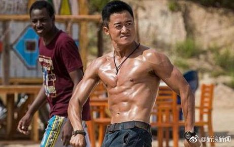

中青报公然刊出歧视女性的言论，真是骇人听闻。男权主义，性别刻板化之类的就更别提了。
@新浪新闻:
【中青报：让更多男孩子重拾阳刚 男人骨子里的荷尔蒙终不可丢】中青报刊文谈“娘炮之风”：“大丈夫当开疆辟土封万户侯”“宁为百夫长不为一书生”的价值观之所以沦落，说到底还是承平日久的缘故。美感取向无疑也会发展，但男人骨子里的荷尔蒙终不可丢。正如网文所言，如果整个社会都去追捧“柔弱美”，男孩子连脾气性格也越来越女性化：小肚鸡肠，爱发脾气，面膜做得比女生还勤，香水3米外都能闻到，承受不起生活中的各种压力，最终演变成心胸狭窄的“瓷男”，压力一大就碎，还谈什么向上向善向前？ 中青报谈“娘炮”风：让更多的男孩子重拾阳刚
中青报谈“娘炮”风：让更多的男孩子重拾阳刚
- 